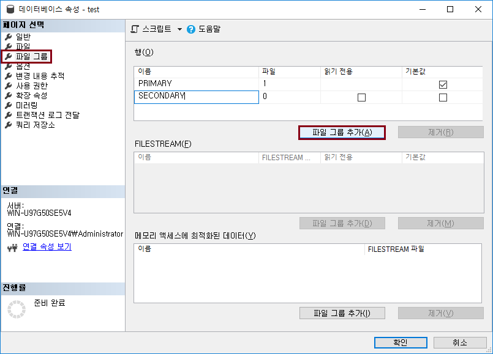

SQL Server 데이터베이스 구조
파일 그룹
SQL Server 파일 그룹에 대해서 알아보자.
파일 그룹
파일 그룹은 논리적 관점에서 데이터베이스를 관리하기 위함
데이터베이스 생성 시 기본적으로 데이터 파일(.mdf) 과 로그 파일(.ldf) 그리고 하나의 PRIMARY 파일그룹으로 생성됨
데이터베이스 파일 및 파일 그룹을 어떤 구조로 생성하냐에 따라 성능 향상에 도움이 됨
파일 그룹 사용 예
아래 그림은 하나의 데이터 파일 크기가 초과한 경우, 관리의 편리함을 위해 여러 개의 데이터 파일로 사용하는 경우임
관리에는 이로울 수 있지만 SQL Server 성능 향상에 도움이 되지 않음
아래는 한 파일 그룹의 파일들을 서로 다른 디스크에 존재하도록 배치하면, 디스크 I/O 를 향상 시킬 수 있음
예를 들어, A라는 테이블은 Primary 파일 그룹에 생성하고, A테이블의 인덱스는 Secondary 파일 그룹에 생성한다면, 해당 테이블 검색 시 성능이 향상 될 것임
출처: jkmoon.tistory.com/
파일 그룹 생성 방법
데이터베이스 > 속성
파일 그룹 > 파일 그룹 추가 > 이름 입력 후 확인

파일 > 파일 추가 > 이름 입력 > 파일 그룹 선택 후 확인
테이블 생성 시, 파일 그룹 지정
create table test2 ( id int, name varchar(50), description varchar(255) ) on SECONDARY
처음으로
이전
다음